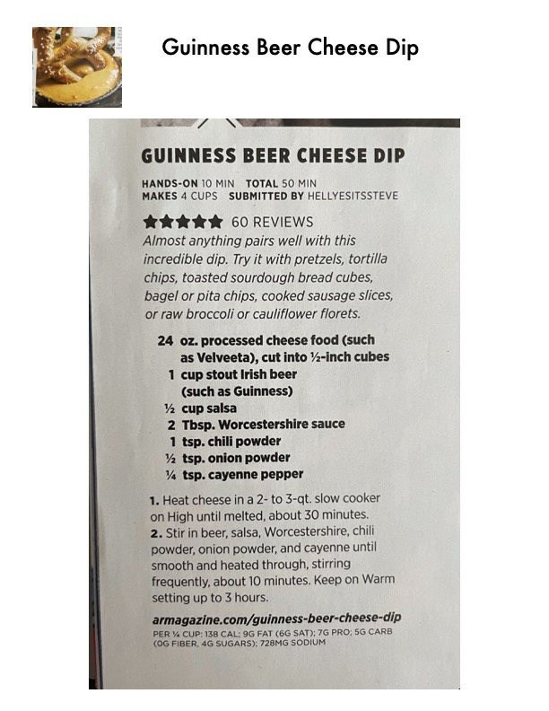

Guinness Beer Cheese Dip

Original cookbook page 176
Almost anything pairs well with this incredible dip. Try it with pretzels, tortilla chips, toasted sourdough bread cubes, bagel or pita chips, cooked sausage slices, or raw broccoli or cauliflower florets.
Prep: 10 minutes • Cook: 40 minutes • Total: 50 minutes
Ingredients
- 24 oz. processed cheese food (such as Velveeta), cut into ½-inch cubes
- 1 cup stout Irish beer (such as Guinness)
- ½ cup salsa
- 2 Tbsp. Worcestershire sauce
- 1 tsp. chili powder
- ½ tsp. onion powder
- ¼ tsp. cayenne pepper
Instructions
- Heat cheese in a 2- to 3-qt. slow cooker on High until melted, about 30 minutes.
- Stir in beer, salsa, Worcestershire, chili powder, onion powder, and cayenne until smooth and heated through, stirring frequently, about 10 minutes. Keep on Warm setting up to 3 hours.
📝 Recipe Notes
Recipe uses a slow cooker for easy preparation and serving. Can be kept warm on the Warm setting for up to 3 hours, making it ideal for parties and gatherings. Rating: 5 stars from 60 reviews. Submitted by Hellyesitssteve.
Recipe #176 from collection